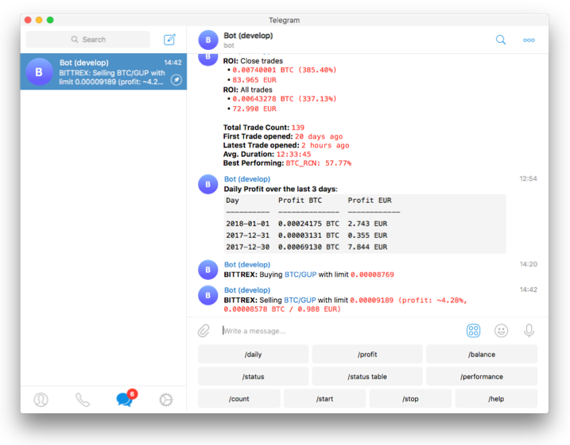

首页


项目说明¶
Freqtrade 是一个用 Python 编写的免费开源加密货币交易机器人。它旨在支持所有主要交易所，并可通过 Telegram 或 Web 界面进行控制。它包含回测、绘图和资金管理工具，以及通过机器学习进行策略优化。
免责声明
本软件仅供教育用途。请勿投入您无法承受损失的资金。使用本软件风险自负。作者及其所有关联方对您的交易结果不承担任何责任。
Always start by running a trading bot in Dry-run and do not engage money before you understand how it works and what profit/loss you should expect.
We strongly recommend you to have basic coding skills and Python knowledge. Do not hesitate to read the source code and understand the mechanisms of this bot, algorithms and techniques implemented in it.

功能特性¶
- 制定策略：使用 pandas 编写您的 Python 策略。策略库 中提供了可供参考的示例策略。
- 下载市场数据：下载您可能想要交易的交易所和市场的历史数据。
- 回测：在下载的历史数据上测试您的策略。
- 优化：使用采用机器学习方法的超参数优化，为您的策略找到最佳参数。您可以优化策略的买入、卖出、止盈（ROI）、止损和追踪止损参数。
- 选择市场：创建您的静态列表，或基于最高交易量和/或价格使用自动列表（回测期间不可用）。您还可以明确将不想交易的市场加入黑名单。
- 运行：使用模拟资金（干运行模式）测试您的策略，或使用真实资金（实盘交易模式）部署它。
- 控制/监控：使用 Telegram 或 WebUI（启动/停止机器人、显示盈亏、每日摘要、当前未平仓交易结果等）。
- 分析：可以对回测数据或 Freqtrade 交易历史（SQL 数据库）进行进一步分析，包括自动生成标准图表，以及将数据加载到交互式环境中的方法。
支持的交易所市场¶
请阅读交易所特定说明，了解每个交易所可能需要的特殊配置。
- Binance
- BingX
- Bitmart
- Bybit
- Gate.io
- HTX
- Hyperliquid (去中心化交易所，简称 DEX)
- Kraken
- OKX
- MyOKX (OKX EEA)
- 可能通过 支持许多其他交易所。(我们无法保证它们能正常工作)
支持的期货交易所（实验性）¶
- Binance
- Bybit
- Gate.io
- Hyperliquid (去中心化交易所，简称 DEX)
- OKX
社区已验证¶
经社区确认可正常工作的交易所：
社区展示¶
本节将重点介绍社区成员的一些项目。
Note
以下项目大部分并非由 freqtrade 团队维护，因此在使用前请自行谨慎评估。
- freqtrade 策略示例
- FrequentHippo - 模拟/实盘运行和回测统计 (由 hippocritical 开发)。
- 在线交易对列表生成器 (由 Blood4rc 开发)。
- Freqtrade 回测项目 (由 Blood4rc 开发)。
- Freqtrade 分析笔记 (由 Froggleston 开发)。
- freqtrade 终端用户界面 (由 Froggleston 开发)。
- Bot Academy (由 stash86 开发) - 关于加密货币机器人项目的博客。
系统要求¶
硬件要求¶
运行此机器人我们建议您使用 Linux 云实例，最低配置为：
- 2GB 内存
- 1GB 磁盘空间
- 2vCPU
软件要求¶
- Docker (推荐)
或者
- Python 3.11+
- pip (pip3)
- git
- TA-Lib
- virtualenv (推荐)
支持¶
帮助 / Discord¶
对于文档未涵盖的任何问题，或想获取有关机器人的更多信息，或仅仅想与志同道合的人交流，我们鼓励您加入 Freqtrade 的 discord 服务器。
准备尝试？¶
请先阅读 Docker 快速入门指南（推荐），或 无 Docker 安装指南。